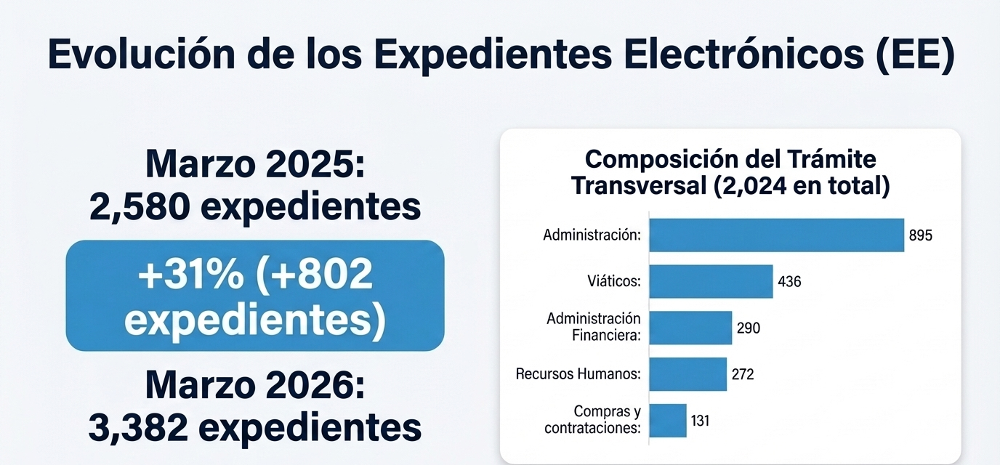
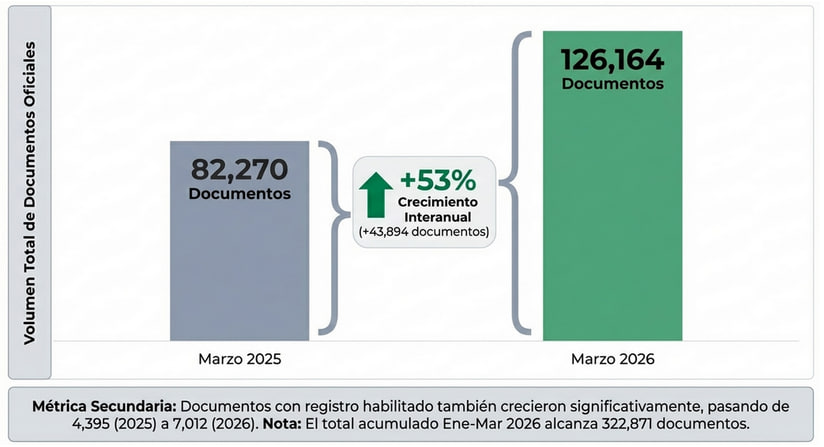

Informe de Gestión y Análisis GDE
Marzo 2026
Resumen informe de gestión detallado sobre el funcionamiento y la evolución del sistema de Gestión Documental Electrónica (GDE) durante marzo de 2026. El rendimiento actual con años anteriores, destaca un crecimiento significativo en la generación de documentos oficiales y en la tramitación de expedientes electrónicos.

Gestión de Trámites
De este volumen total, la mayor parte corresponde a los mencionados Trámites transversales (de uso genérico), alcanzando los 2.024 expedientes, mientras que los 1.358 expedientes restantes corresponden a trámites "Propios" o específicos.

Documentos Oficiales (GEDO)
La cantidad de documentos oficiales generados en el sistema experimentó un crecimiento constante y significativo durante el primer trimestre de 2026 en comparación con los mismos meses del año 2025.
Al analizar la evolución mes a mes, se evidencia una clara tendencia al alza:
- Enero: El volumen total de documentos pasó de 83.375 (2025) a 94.820 (2026) (+14%).
- Febrero: Subió de 91.543 (2025) a 101.776 (2026) (+11%).
- Marzo: Salto pronunciado de 82.270 (2025) a 126.164 (2026), un incremento del 53%, lo que se traduce en 43.894 documentos más en un solo mes.
El crecimiento interanual del 53% en la generación de documentos oficiales refleja el momento de mayor expansión en la adopción del sistema de Gestión Documental Electrónica (GDE) durante el período analizado.

Se presenta la medición de las consultas ingresadas a la Mesa de Ayuda de la Secretaría de Modernización, con el objetivo de analizar la demanda de soporte vinculada al uso del sistema de Gestión Documental Electrónica (GDE).

El lanzamiento del curso Formación de usuarios en el Sistema de Gestión Documental Electrónica (GDE) en la plataforma IPAP con dos aulas disponibles, cuya temática corresponde a Módulos CCOO, GEDO, EE con un total de 916 inscritos por aula. Cohorte 1: Inscripción 12 al 19 de marzo Cursado: 20 de marzo al 17 de abril
Caso: Experiencia de implementación y capacitación - Proceso de viático